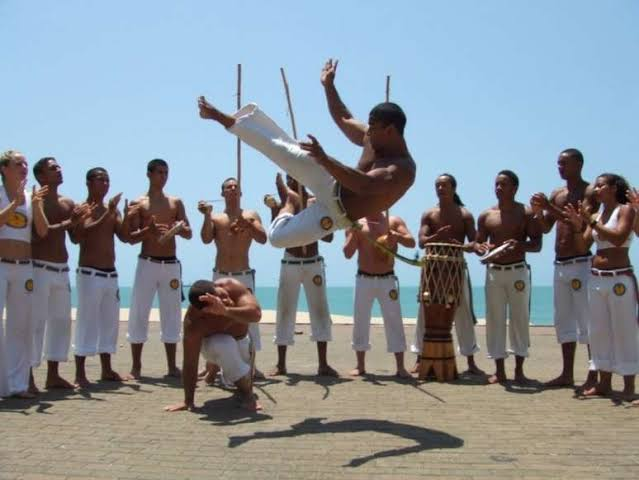
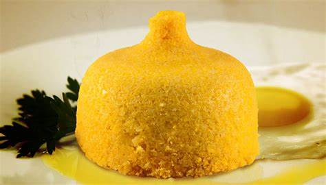
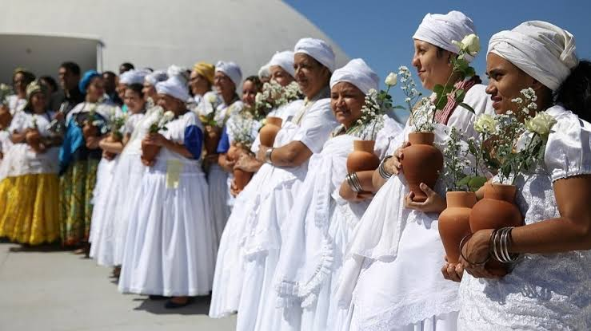

HISTÓRIA E CULTURA
A cultura do Nordeste apresenta características próprias herdadas da interação da cultura dos colonizadores portugueses, dos negros e dos indígenas.
É importante destacar que a cultura representa uma complexa teia. Nela estão incluídos conhecimentos, costumes, artes, crenças, cultos religiosos, literatura popular, danças e hábitos de determinado grupo.
A cultura do Nordeste brasileiro desenvolveu hábitos próprios com relação ao mundo e às manifestações culturais. Esses hábitos foram transmitidos de geração em geração.
Manifestações culturais




As manifestações culturais que mais se destacam na região nordeste do Brasil são: festas juninas, Reisado, poesia popular, artesanato, capoeira, frevo, culinária e muitas manifestações religiosas cristãs e afro-brasileiras.
Capoeira
A capoeira é uma manifestação cultural que envolve luta, dança e música. O seu exercício é acompanhado ao som do berimbau, palmas e pessoas cantando.
Culinária
A culinária nordestina foi desenvolvida sob a influência da comida portuguesa,
africana e indígena. O consumo de raízes, o preparo de comidas bem temperadas e
apimentadas, as comidas de milho e coco, o cuscuz, a pamonha e a canjica são heranças que foram adaptadas em cada estado.
Personalidades Notáveis
Jorge Amado
Jorge Amado foi um renomado escritor brasileiro, conhecido por suas obras que retratavam a cultura e a vida do povo nordestino, como "Gabriela, Cravo e Canela" e "Dona Flor e Seus Dois Maridos". Sua escrita é marcada por um estilo envolvente e por abordar temas sociais e políticos.
Chico Science
Chico Science, cujo nome real era Francisco de Assis França, foi um influente cantor e compositor brasileiro, líder da banda "Chico Science & Nação Zumbi". Ele foi um dos pioneiros do movimento musical "Manguebeat", que misturava elementos da cultura nordestina com rock e música eletrônica.
Maria Bethânia
Maria Bethânia é uma cantora e intérprete brasileira, conhecida por sua voz marcante e por sua carreira de longa data na música popular brasileira. Ela é famosa por suas interpretações de canções da MPB e por sua contribuição para a cultura musical do Brasil.
Luiz Gonzaga
Luiz Gonzaga, conhecido como o "Rei do Baião", foi um icônico cantor e compositor brasileiro, responsável por popularizar o baião e o forró, gêneros musicais tradicionais do nordeste do Brasil, em todo o país. Suas canções, como "Asa Branca", são clássicos da música brasileira.
Ariano Suassuna
Ariano Suassuna foi um importante dramaturgo, escritor e professor brasileiro. Ele é conhecido por suas peças teatrais, em especial "O Auto da Compadecida", que mescla elementos do teatro popular nordestino com crítica social e humor.
Esses artistas e escritores tiveram um impacto significativo na cultura brasileira, cada um à sua maneira, contribuindo para a música, a literatura e o teatro do Brasil.